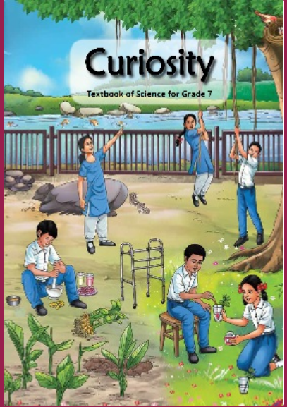

CLASS-7 SCIENCE- CURIOSITY
NCERT Solutions

Chapter-wise solutions for Class 7 Science - Curiocity
Chapter-1
(The Ever-Evolving World of Science)
Open →
Chapter-2
(Exploring Substances: Acidic, Basic, and Neutral)
Open →
Chapter-3
(Electricity: Circuits and their Components)
Open →
Chapter-4
(The World of Metals and Non-metals)
Open →
Chapter-5
(Changes Around Us: Physical and Chemical)
Open →
Chapter-6
(Adolescence: A Stage of Growth and Change)
Open →
Chapter-7
(Heat Transfer in Nature)
Open →
Chapter-8
(Measurement of Time and Motion)
Open →
Chapter-9
(Life Processes in Animals)
Open →
Chapter-10
(Life Processes in Plants)
Open →
Chapter-11
(Light: Shadows and Reflections)
Open →
Chapter-12
(Earth, Moon, and the Sun)
Open →